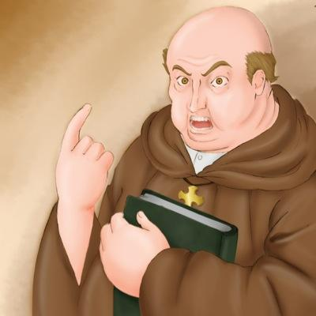

|  | Father Dámaso is an old, ruthlessly corrupt, and Spanish priest who has spent almost two decades residing among the local Filipinos. He has spent all that time among them, but the years have done nothing to make him likeable or to give him any sympathy for his "flock." He is deeply racist, as well as petty and vindictive, and he thinks nothing of using his considerable influence to ruin the lives of those who have wronged him, no matter how small the offense. |